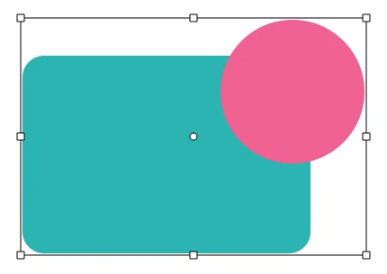
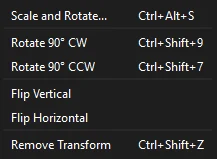
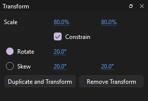
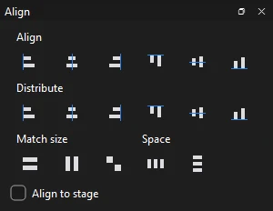
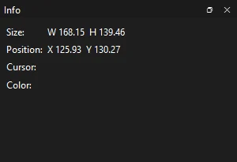
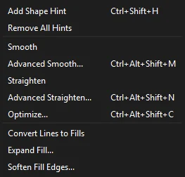
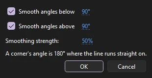
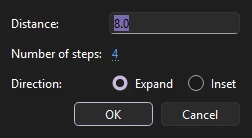

Drawing
Selecting and transforming
Select what you want to change, then move it, copy it, transform it, reshape it, or line it up with everything else.
How a selection behaves depends on what you picked. Merge artwork is selected by area and can be cut along the edge of a selection; drawing objects, groups, symbol instances, text and bitmaps are selected whole. Merge and object drawing explains the difference.
The Selection tool
Press V. The Selection tool is the one you will use most. When you select something with it, or with any other selecting tool (Subselection, Free Transform, Gradient Transform, the lasso tools and the 3D tools), the Properties panel shows the Object tab for what you picked. While another tool is active, hold Ctrl to use the Selection tool for a moment.
| Do this | To |
|---|---|
| Click | Select an object, or one fill or stroke segment of merge artwork |
| Shift-click | Add to the selection, or take something already selected out of it |
| Drag on empty stage | Select with a rectangle (a marquee); see below |
| Shift-drag on empty stage | Add what the rectangle takes to the selection |
| Double-click | Enter a symbol or group to edit it; on merge artwork, select a fill with its outline, or every connected stroke segment. Double-click empty stage to step back out. |
| Click empty stage, or Esc | Clear the selection |
| Right-click | Select what is under the pointer, if it is not selected already, and show the stage's menu of commands for it |
The cursor shows what a press will do: a four-way arrow over something that will move, a curve or a corner beside the arrow over an edge you can bend (see Reshaping with the Selection tool).
The marquee
A marquee picks every object it touches, even if only part of the object is inside it. Merge artwork works by area instead: what the rectangle covers completely is selected whole, and artwork it only partly covers is cut along the rectangle's edge, so you can drag out exactly the piece you enclosed. There is no setting that makes the marquee pick only what it fully encloses.
What can be selected
- Select All (, Ctrl+A) selects everything on the current frame of every visible, unlocked layer, including anything on the pasteboard off the stage. Deselect All is Ctrl+Shift+A. There is no command to invert the selection.
- Nothing on a hidden or locked layer can be selected on the stage. Lock or hide a layer with its controls on the timeline; see Layer controls.
- A single object can be locked too; see Arrange and lock.
- How near a click must be to a line or point to pick it is Click accuracy in : Strict, Normal or Tolerant. See Preferences.
- (Ctrl+H) hides the selection's dot pattern and outlines while it stays selected, so you can judge the art as it is.
Moving and copying
| Do this | To |
|---|---|
| Drag a selection | Move it. Hold Shift to keep the move to the nearest 45° direction. |
| Alt-drag | Move a copy, leaving the original in place. Alt must be held as the drag starts. |
| Arrow keys | Nudge the selection one pixel; ten with Shift. A run of nudges is one step to undo. |
| Type X and Y | Place it exactly; see Position and size |
A press that hardly moves counts as a click, so a slightly shaky click selects without nudging anything. With snapping on, the selection's edges and center line up with guides, the grid and other objects as you drag, and with Snap to Objects on a small ring at the pointer grows when it locks on; see Grid and snapping.
Cut, copy and paste
| Command | Shortcut | Notes |
|---|---|---|
| Cut | Ctrl+X | |
| Copy | Ctrl+C | |
| Paste in Center | Ctrl+V | Pastes in the middle of the part of the stage you can see |
| Paste in Place | Ctrl+Shift+V | Pastes at the original position, for example on another frame or layer. With frames chosen on the timeline, it pastes onto each keyframe they cover, on every unlocked layer chosen |
| Duplicate | Ctrl+D | Copies the selection and pastes it in one step, exactly on top of the original, without touching the clipboard |
| Clear | Delete or Backspace | Removes the selection |
Copies go to the system clipboard. You can paste artwork between two Phoenix windows, and paste your artwork into other apps as a picture or as SVG. When you paste into another document, the symbols, bitmaps and brushes the artwork uses come with it. Phoenix pastes in images, text, SVG and PDF artwork from other apps, and files copied in your file manager, which come in as if you had imported them. There is no Paste Special.
Pasted merge artwork floats above the artwork, selected, until you click elsewhere, just like a shape you have just drawn; drawing objects and other objects stay separate.
Moving to another layer
To move a selection to another layer without shifting it, cut it (Ctrl+X), click the other layer, and choose Paste in Place (Ctrl+Shift+V). To give each selected object a layer of its own, use Distribute to Layers. Dragging a selection onto another layer is not available.
Subselection
Press A. The Subselection tool edits the points of a path directly. Click a path to show its points, drawn as small hollow squares; a selected point is filled.
- Drag a point, or drag a rectangle to select several and drag them together. Shift-click or Shift-drag adds points to the selection.
- Drag a handle to change the curve; Alt-drag to move one handle independently of its partner.
- Alt-drag from a corner point to pull out handles, or Alt-click a smooth point to make it a corner.
- Nudge selected points with the arrow keys, one screen pixel at a time (ten with Shift), so zooming in nudges more finely. Press Delete to remove them.
To add, delete or convert points, use the Add, Delete and Convert Anchor Point tools; see Add, Delete and Convert Anchor Point.
Lasso tools
The lasso slot holds three ways to select an irregular area: the Lasso (L), Polygon and Magic Wand. Hold Shift with any of them to add to the selection. Like the marquee, they cut merge artwork along their outline and pick objects they touch whole.
- Lasso
- Draw a loop freehand. Merge artwork is cut along the loop.
- Polygon
- Click corner after corner. Close the shape by clicking the first corner, double-clicking or pressing Enter. Esc cancels.
- Magic Wand
- Selects an area of similar color in a broken-apart bitmap. Threshold (0 to 200) sets how similar a color must be; Smoothing (Pixels, Rough, Normal or Smooth) sets how the edge of the selection is traced.
Free Transform
Press Q. A box with eight handles appears around the selection, with the transformation point, a small circle, in the middle. With nothing selected, click something to select it and carry on. Click outside the box to select something else, or empty stage to clear the selection.

| Drag | To |
|---|---|
| Inside the box | Move the selection |
| A corner or side handle | Scale from the opposite handle. Shift keeps the proportions; Alt scales around the transformation point. With snapping on, the handle itself lands exactly on a guide, a grid line, or another object's edge, corner or anchor point, and an anchor point wins over a line. |
| Just outside a corner | Rotate around the transformation point. Shift rotates in 45° steps. |
| Along an edge between handles | Skew; the opposite edge stays put |
| The transformation point | Move the point that scaling and rotation work around. It snaps to the center and the handles, and to guides and the grid with snapping on. Double-click it to center it again. |
| A corner with Ctrl | Distort a shape freely. Add Shift to taper: the neighboring corner moves the opposite way. |
The cursor changes to show which of these a press will do. A rotated or skewed selection keeps a rotated or skewed box, so scaling it afterwards works along its own sides. Each drag is one step to undo, and Esc cancels a drag in progress. To flip, drag a side handle past the opposite side, or use Flip Horizontal and Flip Vertical below.
A single object remembers where you put its transformation point. A movie clip also turns about it in 3D.
Distort and Envelope

In Distort mode every corner drag distorts, as if Ctrl were held. In Envelope mode, a mesh of points and handles surrounds the shape, and dragging them warps the artwork inside; dragging a point carries its handles with it. Distort and Envelope rewrite the points of shapes, so they work on merge artwork and drawing objects only. A symbol instance, group, text or bitmap can be scaled, rotated and skewed, but not distorted.
Transform commands

has exact transforms. They work around the middle of the whole selection:
| Command | Shortcut | Does |
|---|---|---|
| Scale and Rotate... | Ctrl+Alt+S | Scales by a percentage (1 to 10000%) and turns by an angle, on top of what is there. It offers your last values again. |
| Rotate 90° CW | Ctrl+Shift+9 | A quarter turn clockwise |
| Rotate 90° CCW | Ctrl+Shift+7 | A quarter turn counterclockwise |
| Flip Vertical, Flip Horizontal | Mirror top to bottom, or left to right | |
| Remove Transform | Ctrl+Shift+Z | Returns each selected instance, group or object to its original size and angle, with no skew, keeping its middle where it was |
Free Transform, Distort and Envelope are tool modes rather than menu commands. Remove Transform does not touch a movie clip's 3D turn; see 3D rotation and translation.
The Transform panel

(Ctrl+T) shows the scale, rotation and skew of the selected object (the first one, if several are selected), and sets them exactly:
- Scale across and down, as percentages. Constrain, on at first, keeps the two the same.
- Rotate by an angle, or Skew each axis by its own angle.
The values you type are the object's own, not added to what is there: typing 20° into Rotate sets it to 20° however it was turned. Each selected object changes around its own transformation point.
Duplicate and Transform copies the selection and gives the copy the panel's values. To make a ring of turned copies, type 30° and click it, then 60° and click it again, and so on; clicking it twice with the same value puts the second copy on top of the first. Remove Transform sets the selection back to 100% and 0°.
3D rotation and translation
Movie clips can be turned about their horizontal and vertical axes with the 3D Rotation tool (W) and pushed into the stage or brought nearer with the 3D Translation tool (G), drawn in perspective. The Object tab's 3D Position and View section sets their depth and the document's perspective. See 3D rotation and translation for the tools, the view settings, tweening in 3D and what other apps see.
Clips turned in 3D can be shaded by lights, cast shadows on the clips behind them, and blur away from a focus depth. See Lights, shadows and depth of field.
Arrange and lock
Objects on a layer are stacked. Use to change their order:
| Command | Shortcut |
|---|---|
| Bring to Front | Ctrl+Shift+↑ |
| Bring Forward | Ctrl+↑ |
| Send Backward | Ctrl+↓ |
| Send to Back | Ctrl+Shift+↓ |
| Lock | Ctrl+Alt+L |
| Unlock All | Ctrl+Alt+Shift+L |
When several objects are selected, they move through the stack together. Merge artwork always stays below the layer's groups, symbol instances and drawing objects, so Arrange moves it only among the other merge artwork, and moves objects only among objects. To put something in front of what is on another layer, move it to a layer higher up the timeline.
Lock keeps the selected objects where they are: a locked object still shows, but can't be selected or moved until you unlock it. Unlock All unlocks every locked object on the frame shown, on every layer of the timeline you are editing. To lock or hide a whole layer, use the layer's controls on the timeline.
Groups
(Ctrl+G) puts the selected objects into a group that moves and transforms as one and is kept from merging with other artwork; Ungroup is Ctrl+Shift+G. Only things on the same frame of the same layer can be grouped together. Double-click a group to edit what is inside while the rest of the stage dims; double-click empty stage to step back out.
(Ctrl+B) takes a group apart, turns a drawing object or primitive into merge artwork, and replaces a symbol instance with the artwork of the frame it shows. Text breaks apart into one text field for each letter, and breaking those apart again turns each letter into a filled shape. See Converting between the two.
Align

(Ctrl+K) lines up the selected objects by their bounding boxes:
- Align
- Their left edges, centers or right edges, or their tops, middles or bottoms, to the edge of the whole selection. It needs two or more objects.
- Distribute
- Spaces their left edges, centers, right edges, tops, middles or bottoms evenly from the first object to the last. The two outermost stay where they are.
- Match size
- Makes them as wide, as tall, or both, as the largest of them. Each grows or shrinks from its top-left corner.
- Space
- Puts equal gaps between them, across or down, keeping the outermost two in place. It needs three or more objects.
Check Align to stage to work to the stage instead of to each other. Align then moves even a single object to the stage's edge or center, Distribute and Space spread the selection across the whole stage, and Match size makes objects as wide or tall as the stage.
The same commands are on , with keys: Left, Horizontal Center and Right (Ctrl+Alt+1 to 3), Top, Vertical Center and Bottom (Ctrl+Alt+4 to 6), Make Same Width and Make Same Height (Ctrl+Alt+Shift+7 and 9), and To Stage (Ctrl+Alt+8), which turns aligning to the stage on and off for all of them.
The Info panel

(Ctrl+I) shows, as you work:
- Size: the width and height of the selection's bounding box.
- Position: the box's top-left corner.
- Cursor: where the pointer is on the stage.
- Color: the red, green and blue values and hex code of the color under the pointer, with a swatch.
The Info panel only reports. To type a new size or position, use the Object tab.
Position and size
For exact numbers, use the Position and Size section of the Object tab: X and Y set the position, and W and H the size. Click the chain button to keep the width and height in proportion.
Reshaping with the Selection tool
With the Selection tool, point at the edge of a shape that is not selected, whether merge artwork or a drawing object:
- When the cursor shows a curve, drag to bend the edge. The bend spreads smoothly along the outline.
- When the cursor shows a corner, drag to move the corner point.
- Hold Ctrl while dragging an edge to pull a new corner out of it.
A shape you have just drawn can be bent straight away. For point-by-point control, use the Subselection tool. To change how thick a stroke is along its length, use the Width tool. More on bending merge artwork: Reshaping merge artwork.
Shape commands

cleans up and reshapes the selected merge artwork and drawing objects. Groups, symbols and text are left alone; break them apart first. Each command is one step to undo.
The Shape Options section of the Object tab has Smoothen and Straighten buttons that do the same as the menu's Smooth and Straighten.
- Smooth
- Softens curves and removes small bumps, by a fixed, gentle amount. Repeat to smooth further.
- Straighten
- Flattens nearly straight curves into lines. Repeat to straighten further.
- Advanced Smooth...
- Ctrl+Alt+Shift+M. Smooths only the corners sharper than Smooth angles below, or blunter than Smooth angles above (a straight run is 180°), at a Smoothing strength from 0 to 100%.
- Advanced Straighten...
- Ctrl+Alt+Shift+N. Straightens at a Straightening strength from 0 to 100%. With Recognize shapes, a closed path that reads as a rectangle or an oval becomes a true one.
- Optimize...
- Ctrl+Alt+Shift+C. Refits curves with fewer points, at a strength from 0 (keeps the shape) to 100 (simplifies most).
- Convert Lines to Fills
- Turns strokes into filled shapes, so you can reshape their edges or fill them with a gradient.
- Expand Fill...
- Grows (Expand) or shrinks (Inset) fills by a Distance in pixels.
- Soften Fill Edges...
- Adds a set of fading bands around fills, outward or inward: Distance is how wide the soft edge is, and Number of steps how many bands make it.


Straighten, Advanced Straighten and Optimize measure their strength on screen, so the same strength changes less when you are zoomed in. Zoom in to tidy fine detail gently, or out for a bolder change.
Two more ways to clean up as you go: the Pencil's Smooth and Straighten modes tidy a line as you draw it (see Pencil), and joins and cuts shapes (see Combining objects).
Distribute to layers
(Ctrl+Shift+D) moves each selected object onto a new layer of its own, ready to animate separately.
does the same in time: the bottom object stays on the current keyframe and each one above it moves to a new keyframe of its own, one after another, which turns a row of drawings into frame-by-frame animation.